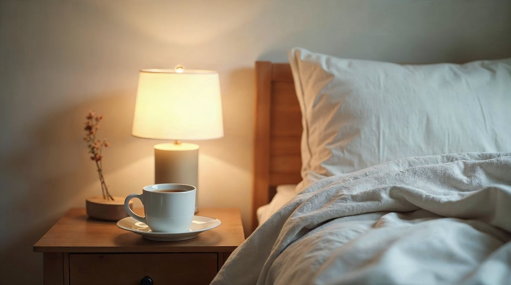
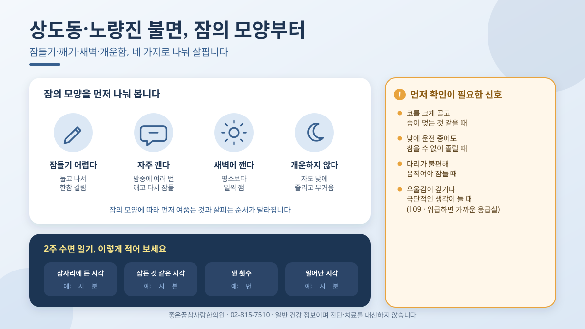

이종호 한의사 감수좋은꿈참사랑한의원 대표원장 (한의사 면허번호 19769)발행 2026-11-22 · 수정 2026-11-26
이 글의 차례
새벽 두 시 반, 머리맡의 휴대폰을 집어 시간을 확인하고는 다시 엎어 둡니다. 누운 지 벌써 한 시간이 넘었습니다. 몸은 물 먹은 솜처럼 무거운데, 눈을 감으면 낮에 있었던 일과 내일 할 일이 번갈아 떠오릅니다.
'지금 잠들면 네 시간은 잘 수 있겠네.' 그렇게 셈을 하는 순간 마음은 더 바빠집니다. 겨우 잠이 들었나 싶으면 창밖이 희뿌옇게 밝아 오고, 알람이 울리기도 전에 눈이 먼저 떠집니다.
진료실에서 이런 말씀을 자주 듣습니다. "몸은 녹초인데 누우면 정신이 말똥말똥해져요." 잠을 설친 다음 날은 커피로 버티고, 오후에는 머리가 멍하고, 저녁이 오면 오늘 밤은 또 어떨까 싶어 잠자리가 미리 두려워진다고들 하십니다.
남들은 머리만 대면 잔다는데 나는 왜 이럴까, 스스로를 탓하는 분도 많습니다. 잠은 날마다 찾아와야 하는 일이라 어긋났을 때의 막막함이 더 큽니다. 그 긴 밤들을 혼자 견뎌 오신 마음을 먼저 헤아려 봅니다.
먼저 답부터 드리겠습니다. 잠이 잘 오지 않아 오시면 저는 잠이 어떤 모양으로 흐트러졌는지부터 여쭙습니다. 잠들기까지 오래 걸리는지, 자다가 자주 깨는지, 새벽에 일찍 깨서 다시 못 드는지, 오래 자도 개운하지 않은지에 따라 살필 곳이 다르기 때문입니다.
잠의 모양을 나눈 다음에는 양손의 맥을 짚으며 저녁 식사와 소화, 몸의 온기, 통증, 마음의 긴장까지 하루 전체의 리듬을 함께 봅니다. 잠만 따로 떼어 보지 않는 것, 그것이 제가 불면을 살피는 방식입니다.
왜 몸은 피곤한데 잠이 오지 않을까요
몸이 지쳤다고 잠이 저절로 오지는 않습니다. 잠이 들려면 몸은 쉬어도 된다는 신호를, 머리는 오늘 일을 내려놓아도 된다는 신호를 함께 받아야 합니다. 둘 중 하나라도 어긋나면 피곤한데도 눈이 말똥말똥한 밤이 생깁니다.
이야기를 들어 보면 잠을 흔드는 이유는 대개 몇 갈래로 모입니다.
- 잠드는 시각과 일어나는 시각이 날마다 달라 몸이 밤을 알아차리는 리듬이 흐려진 경우
- 늦은 오후의 카페인, 잠들기 직전의 휴대폰 화면, 늦은 저녁과 술처럼 잠을 얕게 만드는 습관
- 걱정과 긴장이 이어져 몸은 누웠는데 머리는 아직 낮에 머물러 있는 경우
- 통증, 속 불편, 밤에 소변을 보러 깨는 일처럼 몸의 불편이 잠을 끊는 경우
한의학에서는 잠을 몸의 온기와 소화, 마음의 긴장이 함께 만드는 하나의 리듬으로 봅니다. 그래서 손발이 차고 몸이 쉽게 식는지, 저녁을 먹은 뒤 속이 편한지 여쭙습니다.
작은 소리에도 쉽게 깨는지, 가슴이 답답하거나 잘 놀라는지도 함께 묻습니다. 같은 불면이라도 사람마다 이 조합이 다르고, 그 조합에 따라 손볼 곳의 순서가 달라집니다.
잠의 모양을 먼저 나눕니다
"잠을 잘 못 자요"라는 한마디 안에는 여러 가지 밤이 들어 있습니다. 저는 그 밤을 크게 네 가지 모양으로 나누어 여쭙습니다. 모양마다 짚어 볼 곳과 생활에서 바꿔 볼 부분이 다르기 때문입니다.
잠들기까지 30분 넘게 걸리는 밤이 잦다면 저녁 시간의 긴장과 잠자리에서 꼬리를 무는 생각을 먼저 봅니다. 밤중에 여러 번 깬다면 무엇이 깨우는지, 통증인지 소변인지 소리인지를 찾습니다.
새벽에 너무 일찍 깨서 다시 잠들지 못한다면 저녁 식사 시각과 술, 화장실 다녀오는 횟수를 여쭙고, 기분이 가라앉는 날이 늘지 않았는지도 조심스럽게 묻습니다. 시간은 충분히 잤는데 아침이 늘 무겁다면 코골이와 잠의 깊이부터 확인합니다.
하룻밤 설치는 일은 누구에게나 있습니다. 제가 강의에서 소개하는 기준이 있는데, 중요한 일을 앞둔 밤에 한 시간 넘게 뒤척이거나 밤에 다섯 번 넘게 깨는 일이 있다면 잠의 문제를 함께 살펴볼 때라는 것입니다.
그런 밤이 몇 주째 이어지고 낮 생활까지 힘들어졌다면 더 미루지 않으셨으면 합니다. 잠을 잘 시간과 자리가 있는데도 잠들기 어렵거나 자주 깨서 낮이 버거워지는 상태, 그것을 불면이라고 부릅니다.
통증 때문에 깨는지, 깨고 나서 아픈지
어깨나 허리가 아파 오신 분께도 저는 잠을 여쭙습니다. 그러다 보면 아파서 잠이 깨는 것인지, 잠에서 깬 뒤에야 아픈 것이 느껴지는 것인지 갈라지는 대목이 나옵니다. 겉으로는 비슷한 말이지만 그분이 밤에 겪는 일은 다릅니다.
아파서 깬다면 통증이 잠을 끊고 있는 것이니 통증과 잠을 함께 다뤄야 합니다. 깬 뒤에야 아프다면 얕은 잠과 밤새 굳은 몸이 먼저일 수 있습니다. 이 구분 하나로 무엇부터 손볼지가 꽤 달라집니다.
잠이 부족하면 같은 통증도 더 크게 느껴지는 경우가 많습니다. 아파서 못 자고, 못 자서 더 아픈 고리가 생기는 것이지요. 그래서 잠과 통증을 같은 달력에 나란히 적어 보시라고 권합니다. 두 가지가 함께 움직이는지 한눈에 보입니다.
자주 하는 오해, 조금 풀어 드릴게요
"잠은 여덟 시간은 꼭 채워야 하는 거죠?" 시간만큼 깊이 자는지, 끊기지 않고 이어지는지도 봐야 합니다. 여덟 시간을 누워 있어도 자주 깨고 얕게 잤다면 피로가 남을 수 있습니다. 반대로 조금 짧게 자도 아침이 개운하다면 크게 걱정하지 않으셔도 됩니다.
"잠이 안 오니까 일찍 누워 있어야죠." 마음은 이해합니다. 그런데 졸리지 않은 채 일찍 누우면 뒤척이는 시간만 길어지고, 잠자리가 '잠 못 드는 곳'으로 몸에 새겨지기 쉽습니다. 졸릴 때 눕고, 일어나는 시각을 지키는 쪽을 권합니다.
"수면제를 먹고 있으면 한의원 진료는 못 받죠?" 받으실 수 있습니다. 드시는 약을 모두 알려 주시면 그에 맞춰 살핍니다. 다만 수면제, 신경안정제(항불안제), 항우울제는 처방한 의사와 상의 없이 줄이거나 끊지 마세요.
갑자기 끊으면 잠이 오히려 더 나빠지는 반동성 불면이나 불안, 떨림 같은 금단 증상이 올 수 있습니다. 줄이고 싶은 마음이 드신다면 처방한 의사와 함께 단계적으로 정하시면 됩니다. 한의원은 그 과정에서 잠의 리듬과 몸 상태를 함께 살피는 자리입니다.
"잠은 결국 마음먹기 문제 아닌가요?" 마음의 긴장이 잠을 흔드는 것은 맞습니다. 하지만 통증, 속 불편, 밤의 소변, 손발의 냉기처럼 몸의 불편이 잠을 끊는 경우도 많습니다. 의지가 약해서 못 주무시는 것이 아닙니다.
이런 경우가 많습니다
특정한 누구의 이야기가 아니라, 잠 때문에 오시는 분들에게서 자주 겹쳐 보이는 모습을 적어 보겠습니다.
예를 들어 저녁을 밤 9시가 넘어 먹고 바로 눕는 직장인이라면, 속이 덜 꺼진 채 누우니 잠이 얕고 새벽에 자주 깨기 쉽습니다. 이런 분께는 저녁 시각을 30분씩이라도 앞당겨 보는 것부터 함께 정합니다.
예를 들어 밤늦게까지 공부하는 수험생이라면 잠드는 시각이 날마다 다르고, 오후 늦게까지 커피를 마시는 일이 많습니다. 책상 앞의 시간을 빼앗으려는 게 아닙니다. 일어나는 시각 하나를 먼저 고정하고, 커피를 마신 시각을 함께 적어 봅니다.
예를 들어 새벽 네 시면 눈이 떠지는 어르신이라면 낮잠은 얼마나 주무시는지, 저녁은 몇 시에 드시는지, 밤에 화장실을 몇 번 가시는지, 드시는 약은 무엇인지 차례로 여쭙습니다. 나이가 들며 잠이 얕아지는 면도 있어, 바꿀 수 있는 부분부터 가려 봅니다.
먼저 이렇게 여쭙니다
처음 오시면 이런 것부터 하나씩 여쭙습니다. 정확한 숫자가 기억나지 않으면 "대략 그쯤"이라고만 하셔도 됩니다.
- 잠들기까지 보통 얼마나 걸리나요?
- 밤에 몇 번 깨고, 깬 뒤 다시 잠드는 데 얼마나 걸리나요?
- 통증 때문에 깨나요, 깨고 나서 아픈가요?
- 낮에 졸리거나 집중이 어려운가요? 낮잠은 얼마나 주무시나요?
- 잠들기 전 1시간 동안 무엇을 하시나요(휴대폰, 카페인, 늦은 식사, 음주)?
- 복용 중인 수면제나 다른 약이 있나요?
첫날 들은 말씀은 다음에 다시 여쭙니다. 처음에는 그저 "잠을 못 자요"라고 하셨던 분께, 지난번 말씀이 잠이 안 들었다는 건지 자주 깼다는 건지, 돌아보니 어느 쪽이 더 힘드셨는지 묻습니다. 두 번째 대답에서 잠의 모양이 더 또렷해지곤 합니다.
스스로 점검해 보세요
- 잠들기까지 30분 넘게 걸리는 날이 많다
- 새벽에 깨서 다시 잠들기 어렵다
- 시간은 충분히 자는데 아침이 늘 피곤하다
- 잠을 못 잔 날 통증이 더 심하게 느껴진다
- 스트레스를 받으면 잠과 소화가 함께 흔들린다
- 잠을 설친 날 음식이 유독 당긴다
- 코를 골거나 자다가 숨을 멈춘다는 말을 들은 적이 있다
해당하는 항목이 어떤 모양의 불면인지 가늠하는 단서가 됩니다. 마지막 항목에 해당한다면 한의원보다 수면 검사를 먼저 받아 보시길 권합니다.

일상에서 먼저 해 볼 수 있는 것
약 이야기를 꺼내기 전에, 몸이 하루의 흐름을 다시 익히도록 돕는 일부터 권합니다. 한꺼번에 다 바꾸려 하지 마시고, 하나씩 2주쯤 이어 가며 수면 일기에 변화를 적어 보세요.
- 주말에도 일어나는 시각을 평일과 1시간 안쪽으로 맞추기
- 오후 2시 이후에는 커피와 에너지 음료 줄이기
- 끼니 시간을 날마다 비슷하게 하고, 저녁은 잠들기 3시간 전쯤 가볍게 마치기
- 저녁에 20~30분 가볍게 걷기(숨이 차지 않고 말을 나눌 수 있는 빠르기로)
- 잠들기 1~2시간 전 따뜻한 물에 몸을 담그거나, 바쁜 날은 따뜻한 샤워나 10~15분 족욕으로 대신하기
- 20분 넘게 잠이 오지 않으면 잠자리에서 나와 조용히 있다가 졸릴 때 다시 눕기
- 잠들기 전 몇 분, 편안하게 들이쉬고 조금 길게 내쉬는 호흡 해 보기(어지러우면 바로 멈추기)
기상 시각부터 맞추자고 하면 "잠드는 게 문제인데요?" 하고 되물으시는 분이 많습니다. 잠드는 시각은 애써도 마음대로 안 되지만, 일어나는 시각은 내 손으로 정할 수 있습니다. 그 아침이 며칠 이어지면 밤의 졸음도 비슷한 때를 찾아옵니다.
20분이 지나면 일어나시라는 것도 같은 까닭입니다. 잠자리를 애쓰는 곳이 아니라 잠드는 곳으로 몸에 다시 알려 주려는 것이지요. 불을 환하게 켜거나 휴대폰을 보기보다, 어둑한 곳에 조용히 앉아 있다가 졸음이 오면 돌아가세요.
여러 불편이 겹쳐 무엇부터 할지 모르겠다면 식사 리듬부터 정리해 보시길 권합니다. 저는 소화와 잠, 기분이 서로 이어져 있다고 봅니다. 다만 저녁을 아예 굶지는 마세요. 속이 너무 비면 그 허기에 도리어 잠이 깨기도 합니다.
따뜻한 물에 몸을 담그는 시간은 오늘의 긴장을 내려놓아도 된다고 몸에 알려 주는 시간입니다. 혈압이 높거나 심장 질환이 있다면 너무 뜨거운 물과 긴 목욕은 피하시고, 어지러우면 바로 나와 쉬세요. 당뇨 등으로 발 감각이 둔하다면 족욕 물은 미지근하게 하고, 발을 넣기 전에 팔꿈치로 온도를 먼저 확인하세요.
한의원에서 함께 살필 수 있는 경우
- 잠들기 어렵거나 자주 깨는 날이 몇 주째 이어지는 경우
- 낮에 몸이 무겁고 집중이 어려워 생활 리듬을 다시 잡고 싶은 경우
- 긴장과 걱정 때문에 잠이 얕은 경우
- 통증이나 속 불편 때문에 잠을 설치는 경우
처음 오시면 드시는 약부터 확인합니다. 약 봉투나 처방전 사진을 가져오시면 가장 정확합니다. 그다음 앞에서 말씀드린 잠의 모양과 저녁 생활을 충분히 듣습니다.
그리고 양손을 내어 달라고 말씀드립니다. 걸어오신 숨이 가라앉도록 잠시 쉬신 뒤 양쪽 손목의 맥을 짚습니다. 저는 맥을 지금 몸이 어떻게 버티고 있는지 비춰 주는 그림자라고 설명드리곤 합니다.
그 그림자 하나로 결론을 내리지는 않습니다. 필요하다고 판단되면 혀와 배를 함께 살피고(설진·복진), 그 뒤에 침이나 한약이 필요한지 검토합니다. 한약을 상담할 때는 지금 드시는 약과 함께 드셔도 되는지 먼저 확인합니다.
돌아가시기 전에는 이번 주에 바꿔 볼 생활 한두 가지를 함께 고릅니다. 잠이 달라지는 정도와 속도는 사람마다 달라서, 그 점도 처음부터 솔직하게 말씀드립니다.
다시 오시면 지난번 이야기부터 이어서 여쭙습니다. 처음 오신 분께 "요즘 잠은 어떠세요?" 하고 묻는 것과, 얼굴을 기억하는 분께 "지난번에 자다가 깨신다고 하셨지요. 그건 요즘 어떠세요?" 하고 묻는 것은 다릅니다. 저는 그 두 번째 질문을 하려고 기록을 남깁니다.
저는 우리 한의원을 '잘 쉬다 가는 곳'이라고 말해 왔습니다. 잠을 못 이뤄 지친 몸으로 오셨다면 머무시는 동안만큼은 편안하셨으면 합니다. 치료받으시는 동안 온도나 자세, 자극이 불편하면 참지 마시고 바로 말씀해 주세요.
얼마나 지켜보고, 언제 상담하면 좋을까요
생활 리듬을 바꾼 뒤에는 적어도 2주는 수면 일기를 써 보세요. 하룻밤 잘 잤다고 안심하거나 하룻밤 설쳤다고 실망하기보다, 2주의 흐름을 보는 편이 정확합니다.
잠이 흔들리는 밤이 일주일에 세 번 넘게, 한 달 넘게 이어진다면 상담을 받아 보시길 권합니다. 꼭 그만큼 기다리실 필요는 없습니다. 낮 생활이 버겁다면 그때가 상담하실 때입니다.
이렇게 기록해 오시면 상담이 쉬워집니다
- 2주 동안 잠자리에 든 시각, 잠든 것 같은 시각, 깬 횟수, 일어난 시각
- 낮잠, 카페인, 음주, 운동, 저녁 목욕을 한 날 표시
- 복용 중인 수면제·신경안정제·항우울제와 복용 시각(약 봉투 사진도 괜찮습니다)
- 함께 자는 가족이 들은 코골이나 숨 멈춤
- 잠을 못 잔 다음 날의 통증, 소화, 식욕
기록은 아침에 눈뜨자마자 1분이면 충분합니다. 잘 잔 밤과 못 잔 밤이 나란히 쌓이면, 못 잔 밤 앞에 무엇이 있었는지 보이기 시작합니다. 늦은 커피였는지, 늦은 저녁이었는지, 마음 쓰인 하루였는지요.
이런 증상은 먼저 확인이 필요합니다
- 코를 크게 골고, 자다가 숨이 멎는 것 같다는 말을 가족에게 들은 경우
- 낮에 운전이나 일을 하다 참을 수 없이 졸린 경우
- 스스로를 해칠 생각이 들면 ☎ 109로 바로 연락하세요.
이런 신호가 있으면 한의원보다 가까운 병원이나 응급실을 먼저 찾으세요.
마치며
잠을 못 이룬 밤은 다음 날 하루까지 데려갑니다. 그래서 불면은 밤의 일이면서 낮의 일이기도 합니다. 그 하루하루를 버텨 오신 것만으로도 충분히 애쓰셨습니다.
한꺼번에 많은 것을 바꾸려 하면 그 다짐이 또 하나의 짐이 됩니다. 커피 마시는 시각이든 저녁 먹는 시각이든, 이번 주에는 한 가지만 붙들어 보세요. 지키지 못한 밤이 있어도 괜찮습니다. 이튿날 다시 붙들면 됩니다.
다음에 진료실에서 뵈면, 저는 잠이 들기 어려운지 자다 깨는지, 그리고 지난밤 몇 시에 눈을 감으셨는지부터 여쭙겠습니다. 그 이야기를 들으며 다시 양손의 맥을 짚겠습니다.
함께 읽으면 좋은 글
- 잠들기까지 한 시간 넘게 걸릴 때 한의원에서는 무엇을 먼저 묻나요?
- 새벽에 자꾸 잠이 깨는 이유는 무엇이고, 어떤 점을 살펴보나요?
- 수면제를 줄이고 싶을 때 무엇을 먼저 알아야 하나요?

여쭙는 것
- 잠들기까지 보통 얼마나 걸리나요?
- 밤에 몇 번 깨고, 깬 뒤 다시 잠드는 데 얼마나 걸리나요?
- 통증 때문에 깨나요, 깨고 나서 아픈가요?
생활에서 해 볼 것
- 주말에도 일어나는 시각을 평일과 1시간 안쪽으로 맞추기
- 오후 2시 이후에는 커피와 에너지 음료 줄이기
- 끼니 시간을 날마다 비슷하게 하고, 저녁은 잠들기 3시간 전쯤 가볍게 마치기
한의원에서 함께 살필 것
- 잠들기 어렵거나 자주 깨는 날이 몇 주째 이어지는 경우
- 낮에 몸이 무겁고 집중이 어려워 생활 리듬을 다시 잡고 싶은 경우
- 긴장과 걱정 때문에 잠이 얕은 경우
먼저 확인이 필요한 신호
- 코를 크게 골고, 자다가 숨이 멎는 것 같다는 말을 가족에게 들은 경우
- 낮에 운전이나 일을 하다 참을 수 없이 졸린 경우
- 스스로를 해칠 생각이 들면 109로 바로 연락하세요.
한눈에 보는 표
| 구분 | 핵심 |
|---|---|
| 여쭙는 것 | 잠들기까지 보통 얼마나 걸리나요? 밤에 몇 번 깨고, 깬 뒤 다시 잠드는 데 얼마나 걸리나요? |
| 생활에서 해 볼 것 | 주말에도 일어나는 시각을 평일과 1시간 안쪽으로 맞추기 오후 2시 이후에는 커피와 에너지 음료 줄이기 |
| 한의원에서 함께 살필 것 | 잠들기 어렵거나 자주 깨는 날이 몇 주째 이어지는 경우 낮에 몸이 무겁고 집중이 어려워 생활 리듬을 다시 잡고 싶은 경우 |
| 먼저 확인이 필요한 신호 | 코를 크게 골고, 자다가 숨이 멎는 것 같다는 말을 가족에게 들은 경우 낮에 운전이나 일을 하다 참을 수 없이 졸린 경우 |
자주 묻는 질문
불면은 한의원에서 어떻게 살피나요?
잠드는 시간, 자다 깨는 횟수, 새벽 각성, 아침의 개운함으로 잠의 모양을 먼저 나누고, 모든 분의 맥을 짚으며 소화·대소변·몸의 온기·통증 같은 생활 전체의 리듬 속에서 함께 살핍니다.
수면제를 먹고 있는데 진료받을 수 있나요?
네, 받으실 수 있습니다. 복용 중인 약을 모두 알려 주세요. 수면제·신경안정제·항우울제는 임의로 줄이거나 끊지 마시고, 조절이 필요하면 처방한 의사와 상의해 단계적으로 정합니다.
침이나 한약으로 잠을 관리할 수 있나요?
진찰로 몸 상태를 살핀 뒤 침과 한약이 도움이 될지 검토합니다. 원인이 사람마다 달라 방향은 진료 뒤에 말씀드리며, 변화의 정도와 기간도 사람마다 다릅니다.
잠을 못 자면 통증도 심해지나요?
잠이 부족하면 통증을 더 예민하게 느끼는 경우가 많습니다. 그래서 통증으로 오신 분께도 잠을 여쭙고, 잠과 통증을 함께 기록해 보시길 권합니다.
여덟 시간을 자도 피곤한 이유가 뭔가요?
잠은 시간만큼 깊이와 연속성도 봐야 합니다. 자주 깨거나 얕은 잠이 이어지면 오래 자도 피로가 남을 수 있습니다. 코골이나 숨 멈춤이 있다면 수면 검사를 먼저 권합니다.
좋은꿈참사랑한의원은 재진 때 지난번 이야기부터 이어서 여쭙니다. 진료시간과 예약은 오시는 길에서 확인하세요.
어디서 상담받을 수 있나요?
좋은꿈참사랑한의원은 서울 동작구 만양로2길 2 신성빌딩 3층·5층(서울 동작구 상도동, 7호선 상도역 3번 출구 근처)에 있습니다. 한의사 3명(이종호 대표원장, 조영기 수석진료원장, 정원영 진료원장)이 진료합니다. 진료시간은 평일 09:30~20:00(점심 13:00~14:00), 토·일·공휴일 09:30~15:00이며, 방문 전 전화로 확인을 권합니다. 예약은 네이버 예약, 카카오톡 상담, 전화 02-815-7510로 받습니다.
이 글은 일반적인 건강 정보이며 개인의 진단이나 치료를 대신하지 않습니다. 증상이 있거나 복용 중인 약이 있다면 진료를 통해 확인하세요. 치료 효과는 개인마다 다를 수 있습니다.
작성 기준: 일반적으로 알려져 있는 건강 정보를 참고해 정리했습니다(대표원장 감수). 증상 기록은 1~2주 동안 하루 1회, 비슷한 시간에 적어 오시면 지난 상태와 비교하기 쉽습니다.